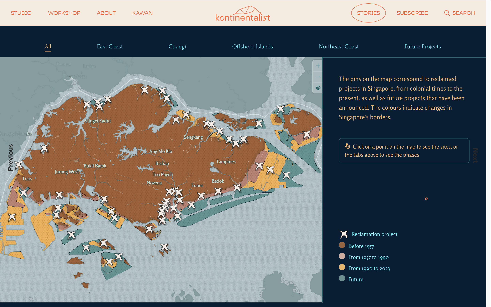

←



1
2
3
4
"Reclamation project": When these "x" markers are clicked, they're not highlighted. I can easily mistake the project description for other markers shown in the map.
Suggestion: When selected, change marker color from white to another color, such as yellow.
Suggestion: When selected, change marker color from white to another color, such as yellow.
Legend for 1957 to 2023: Good and intuitive color gradation. The darker the color, the longer that piece of land has been there.
"Future": Poor choice of color. It easily blends in with the background, i.e. with the seas and the non-Singapore pieces of land.
Suggestion: Choose a color that will have better contrast with the background.
Suggestion: Choose a color that will have better contrast with the background.
"Previous": Why is this here? Unnecessary placement. I accidently clicked it and was transferred to another online magazine on Cambodia's monkey farms.
Suggestion: Omit.
Suggestion: Omit.
Figure 1. Map of key reclamation phases. Click on the numbered markers to view critiques.
→